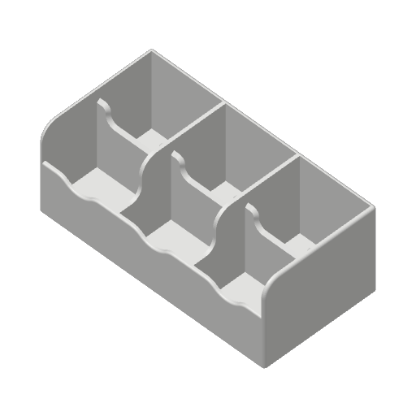

Caixa de chá com 6 compartimentos, revisada parâmetro a parâmetro: saiu de um projeto do Bambu Studio para a A1 e virou um projeto do Creality Print para a Creality Hi Combo, em PLA branco. Fatiado e validado pelo próprio Creality Print 7.2.

| Impressora | Creality Hi 0.4 nozzle · mesa PEI texturizada |
|---|---|
| Filamento | Generic PLA @Creality Hi · branco · 220 °C / mesa 60 °C |
| Camada | 0,20 mm · 413 camadas |
| Tempo · material | 9h 18m · 345 g |
| Suporte · brim | nenhum · nenhum (saia de 1 volta) |
Recomendado
Impressora, filamento, processo e posição na mesa já definidos. Abra, confira, fatie e envie. Validado: o próprio Creality Print 7.2 abriu e fatiou este arquivo.
Baixar .3mfDireto para a impressora
Gerado pelo Creality Print 7.2 a partir deste projeto. Pendrive ou envio pelo app — nada é recalculado.
Baixar .gcode (12 MB)STL limpo Preset de processo (.json) Leia-me completo
Creality Hi · 192.168.100.142
O arquivo Tea-Holder-Creality-Hi-PLA-branco.gcode já está na memória da Hi
(enviado pela API Moonraker, 11.965.245 bytes, íntegro). Aparece na lista de arquivos da tela
e no Fluidd (http://192.168.100.142:4408). A impressão não foi iniciada:
o CFS constava como desconectado e o sensor do caminho direto detectava um filamento — confira que é o
PLA branco antes de dar o start.
Bambu Studio
Cinco presets de usuário instalados: impressora Creality Hi 0.4 nozzle (herda do K1 Max — Klipper, CoreXY — com mesa 260 × 260 × 300, limites, retração e G-codes da Hi), processos 0.20mm Standard e Tea Holder – PLA branco, filamentos Generic PLA e Hyper PLA. Reinicie o Bambu Studio e a impressora aparece na lista. Validado: o Bambu fatiou o Tea Holder com eles (586 min, 345,0 g).
Como usar Preset da impressora| Parâmetro | Original (Bambu A1) | Creality Hi | Por quê |
|---|---|---|---|
| Impressora / processo / filamento | A1 · 0.20 Standard · Generic PLA @A1 | Hi 0.4 · 0.20 Standard @Hi · Generic PLA @Hi | perfis de sistema do Creality Print 7.2 — velocidades, retração e G-code da Hi |
| Paredes | 2, clássico | 4, Arachne | parede de 3,2 mm = 7,6 linhas; o Arachne ajusta a largura e fecha maciço, sem fresta |
| Fundo / topo | 3 / 5 | 4 / 5 | fundo de 6,4 mm firme; topo fecha os pisos dos compartimentos |
| Preenchimento | 15% gyroid | 20% grade | só existe no fundo; grade é mais rígida no plano |
| Ironing | não | top | piso dos 6 compartimentos e borda alisados — é o que se vê ao abrir |
| Brim / saia | automático / 0 | nenhum / 1 volta | 246 cm² em PEI a 60 °C, impressora fechada; brim só marcaria a borda |
| Mesa | PEI texturizada 65 °C | PEI texturizada 60 °C | perfil de PLA da Hi |
| Pé de elefante | 0,075 | 0,15 | valor da Hi; base de 222 mm esmaga mais a 1ª camada |
| Suporte | não | não | 0,4 cm² de balanço acima de 45°, sem tetos internos |